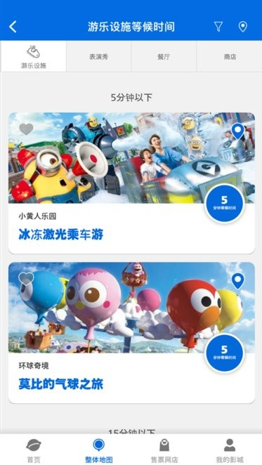

日本环球影城官方 App 实操教程 — 号码券、等候时间、SNW 互动一次讲透
第一次去 USJ 却不知道怎么用官方 App 拿号码券？这篇教程带你从零到一，从下载登录到登记入场票、刷券、SNW 能量手环配对，每一步都给你抠细节。
读完这篇教程，你在去日本环球影城（USJ）之前就能把usj app官网上介绍的官方 App 摸得门儿清——入园前收藏好感兴趣的设施、入园后三两分钟拿到号码券、超级任天堂世界的金币互动也能玩得明白。
准备阶段：出门前一天搞定这些事
确认手机和网络
USJ 官方 App 是全程联网的，刷号码券、看等候时间、同步 SNW 金币数据，没有网络统统白搭。园区里的公共 Wi-Fi 覆盖不全、速度慢，旺季几百人挤一个热点根本打不开页面。
你需要提前准备好日本当地可用的移动数据。从国内过去的游客有三条路：提前租 Wi-Fi 蛋（淘宝下单，机场取件，回国归还）、手机开通日本国际漫游（选 4G/5G 套餐，别选 2G）、或者到了日本机场直接买当地 SIM 卡。三条路都能走，Wi-Fi 蛋最经济实惠，每天 2~5GB 流量够用一整天。
别忘带一个 10,000mAh 以上的移动电源，App 持续联网加 GPS 定位，掉电速度比你想象的快。
下载并登录 App
安装包从usj app下载拿，或者直接在 App Store 或 Google Play 搜索 "USJ Official App" 就能找到。打开后先注册一个账号——如果你打算买能量手环或者想攒积分，建议关联 Club Universal（官方会员体系），买门票和消费都能累积点数，还能自动同步已购门票。
行前规划：把想去的设施先收藏
App 底部导航栏点「我的影城」，进去后能找到收藏夹入口。2024 年改版后新增的收藏功能很实用——你可以在出发前就把感兴趣的游乐设施、表演秀、餐厅、商店全部标成收藏。
为什么要花这个功夫？USJ 园区 1.6 平方公里，游乐设施超过 50 个。没有收藏夹的话，入园后在"等候时间"列表里从 50 多个设施里扒你想玩的，至少多花十分钟。收藏完之后，园区里随时打开收藏夹就能看到列表，配合等候时间一眼判断现在该去哪。
入园后核心操作：三步拿到号码券
第一步：登记入场票
这是所有号码券的前置步骤——没登记门票，App 后端不知道你当天有没有效票，任何券都拿不到。
入园后，打开 App 首页点「电子号码券」，第一次进入会自动弹出"登记入场票"界面。把门票上的 QR Code 对准扫描框，距离 15~20cm 正对扫，扫成功后 App 会显示你的票种、有效期、同行人数。
组团的话，所有人的票可以在同一台手机上连续扫完，发券时选择同时发给所有人就行。但有个关键提醒：如果分开拿抽选券，即使中选也只能按券上注明的人数入场，所以组团务必一台手机统一登记统一领券。
第二步：刷园区入场号码券
登记成功后，App 首页的号码券入口就能用了。点进去后，把你收藏夹里的热门设施号码券逐个刷一遍——哈利波特禁忌之旅、超级任天堂世界区域入场券、小黄人爆米花车这些热门项目，号码券放出来几分钟就被抢光，入园后第一件事就是刷券，别先去拍照。
刷到号码券之后，App 会显示一个带时间戳的二维码，在指定时间段内到指定入口出示就行。

第三步：等候时间实时查
拿到号码券之后，你中间这段空出来的时间去干嘛？打开 App 首页，每一个游乐设施当前的排队等候时间都实时显示。哪些设施排队短可以临时插一个，哪些表演秀快开场了该过去了，一眼就能看明白。
等候时间和收藏夹配合起来最好用：收藏夹里的设施如果排队时间突然降到 20 分钟以下，果断绕过去玩一个再回来等你的号码券时间段。

超级任天堂世界专属：能量手环配对与金币互动
如果你买了 Power-Up Band™ 能量手环（约 ¥4,600 日元，在 SNW 区域内单独购买），那 App 的作用就不止是拿号码券了——它是你在 SNW 里完整体验互动玩法的关键。
能量手环配对步骤
- 打开 App 首页，点「超级任天堂世界」卡片进入专属界面
- 找到「能量手环配对」入口，点进去
- 用手机扫手环上的二维码，几秒内绑定成功
- 可以在 App 里切换手环绑定的角色（马力欧 / 路易吉 / 桃子公主等）
配对完成后，你在 SNW 区域里走到任何互动机关前，手环靠近一下就能触发互动——收集金币、解锁挑战、和角色互动。这些数据实时同步到 App，你随时能查看自己攒了多少金币、解锁了哪些关键挑战（Key Challenges）、还能跟其他在 SNW 的游客比金币数排名。想深入了解每个挑战的触发条件和奖励机制的话，去usj app文档翻一下更全。
三层入场逻辑别搞混
经常有人搞不清 SNW 的三层入场权，这里帮你理清楚：
- Studio Pass → 进园区大门
- SNW 区域入场号码券 / 保证券 → 进超级任天堂世界区域
- 能量手环 + App → 玩 SNW 区域里的互动游戏（金币、挑战、排行）
三层可以独立购买也可以组合，但缺了第三层，你就算买了手环也看不到自己的金币进度，等于白买。
新手最容易翻车的三个卡点
卡点一：号码券刷不出来
最常见的原因是网络不行。园区里的公共 Wi-Fi 在地下区域、金属场馆附近信号极差，号码券界面会一直转圈。
解法：关掉 Wi-Fi 切到移动数据，或者走到园区大门入口附近、哈利波特场馆内部、超级任天堂世界服务台这些信号稳定的位置再试。如果一直失败，确认 App 是最新版本——旧版本票库可能没同步。
卡点二：门票扫不上二维码
光线太暗、手机镜头有污渍、扫描角度太斜都会导致识别失败。调整到室内或阴影处扫一次，擦一下摄像头，正对二维码保持 15~20cm 距离。实在扫不上的话，App 一般会提供手动输入入口，输入票号和验证码效果一样。
如果扫出来显示"票已被使用"或"票无效"，先确认门票日期是不是当天的 Studio Pass，再不行联系园区服务台现场解决。
卡点三：SNW 金币没同步到 App
能量手环本身可以独立收集金币（存在手环里），但必须跟 App 配对后数据才会同步显示。如果已经配对但金币数还是 0，先走到 SNW 区域内的数据同步点（一般在入口附近的服务台），手环靠近同步点强制刷新一次，然后 App 下拉刷新页面。
进阶一句话
把收藏夹 + 等候时间 + 号码券三个功能串起来用，你就能在园区里动态调整行程——哪个设施排队短就先去刷哪个，号码券时间段到了再回去，全程基本不用傻站着排队。这套玩法比拿着纸质导览图按顺序跑要高效得多。
App 本身还有很多细节可以挖——Yoyakunori 预约乘坐、餐厅排队号码、SNW 区域活动地图标记所有金币点位置，这些功能在需要的时候打开看看就行，不用一开始就全部研究透。你把上面讲的登记门票、刷号码券、查等候时间这三件事先跑通，整个园区体验就已经比大多数游客顺畅了。
这套资料我维护了三个代码仓库方便不同网络环境访问——GitHub上是主仓库，国内慢的话可以换Gitee或GitCode的镜像。